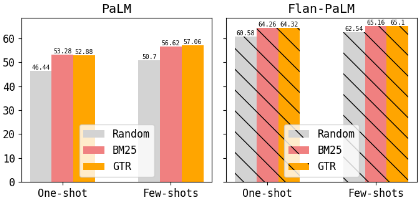
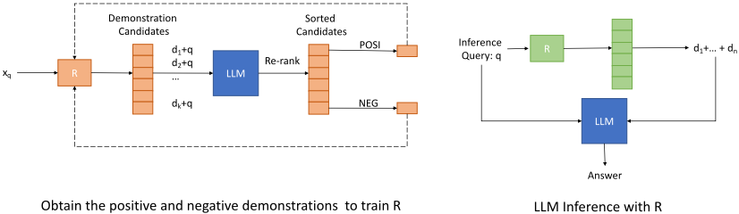
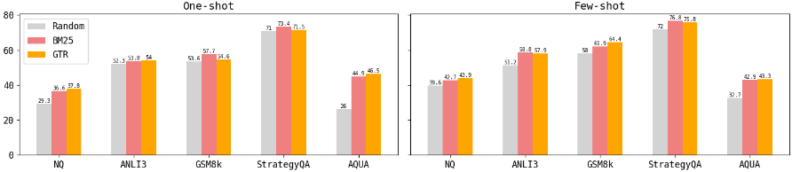
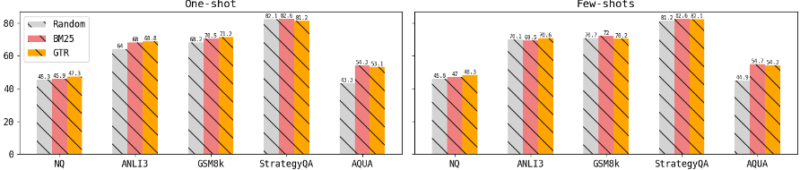

Dr.ICL：基于示例检索的 In-context Learning（Demonstration-Retrieved In-context Learning）
该论文研究 in-context learning (ICL) 中 few-shot 示例（demonstrations）的选择问题：与其对所有查询使用固定或随机示例，不如用检索器按查询相似度从训练数据中动态选取。方法上先验证 BM25 与 GTR 两个 off-the-shelf 检索器即可提升 PaLM-540B 与 instruction-finetuned 的 Flan-PaLM 的 ICL 效果，并证明与 CoT 提示可叠加增益；进一步用 LLM 对候选示例打分（gold answer 的 LM 概率）构造正例与难负例，以对比学习微调出任务专属的 demonstration 检索器，在 one-shot 场景改进最明显。关键结论是：即使模型在训练时已见过这些数据，测试期检索复用仍能提升性能，且简单的 BM25 就够用、易于部署。对团队而言，这是关于'上下文里该放哪些示例'的直接可借鉴方案，适用于知识库问答与提示模板资产化场景。
ICL 通常对所有测试查询使用固定或随机挑选的 demonstrations，这未必最优。论文要解决：如何为每个输入查询检索最合适的示例；检索式 ICL 对 instruction-finetuned LLM 是否依然有效；能否与 CoT 等先进提示技术叠加增益；以及能否训练出超越 off-the-shelf 检索器、能同时覆盖查询特定知识与任务一般解法（task nature）的任务专属示例检索器。
提出 Dr.ICL 框架：为每个任务用其训练数据构建检索语料（含 CoT 的任务每条存 question+CoT+answer），推理时由检索器为查询选取 top-n 示例拼入提示。第一步用 BM25（稀疏词重叠）与 GTR（基于 T5 的稠密双编码器）两个 off-the-shelf 检索器验证有效性；第二步训练任务专属检索器：用 off-the-shelf 检索器取 100 个候选示例，用 PaLM-62B 计算 gold answer 的条件概率 p_LM(y_q|d,x_q) 作为分数重排，top-5 作正例、bottom 作难负例，再以 in-batch negatives + hard negatives 的对比损失微调 GTR 双编码器。
在 NQ、ANLI(r3)、GSM8k、AQuA、StrategyQA 五个数据集（exact matching accuracy 评测）上，BM25 与 GTR 检索的 demonstrations 在 PaLM-540B 的 one-shot 与 few-shot ICL 中均优于随机示例（具体精度数值以图3/图4呈现，正文未列出）
对 instruction-finetuned 的 Flan-PaLM：检索示例优于无示例与随机示例，即模型训练时已见过的数据在测试期作为检索示例复用仍能带来收益
在 GSM8k、StrategyQA、AQuA 上，Dr.ICL 与 CoT 结合在 one-shot 与 few-shot 下均优于仅用 CoT
自训练检索器 Demo-GTR 在几乎所有情况下优于 off-the-shelf GTR，one-shot 场景提升最显著（Table 2）
标签重叠分析：前四个数据集的示例答案与目标答案重叠率约等于或低于均匀分布，说明收益并非来自标签识别；NQ 存在明显重叠（GTR one-shot 下 433 个重叠案例），随机抽 100 例人工检查，多数输入问题与示例问题语义等价
训练数据构造细节：GTR 检索 100 个候选，PaLM-62B 按 gold answer 的 LM 概率打分重排，取 top-5 为正例
此前检索式 ICL 工作（KATE、EPR、UPRISE、CEIL 等）主要面向通用 LLM（如 GPT-3）。本文的区别在于：(1) 证明简单的 BM25 词重叠检索即可优于随机示例，索引内存与检索延迟开销小、易于部署；(2) 系统验证检索式 ICL 对 instruction-finetuned LLM（Flan-PaLM）同样有效，训练数据在测试期复用仍有收益；(3) 证明 Dr.ICL 可与 CoT 等先进提示技术叠加；(4) 用 LLM 概率信号训练任务专属 demonstration 检索器，在 one-shot 场景改进最显著。
相关度级别：high
命中能力域：3.1 上下文工程与记忆 | 3.2 提示工程
理由：论文核心问题是'ICL 上下文中应放入哪些示例'，直接命中 3.1（检索增强的上下文组织）与 3.2（提示技术、in-context learning、CoT 组合）。团队构建知识库问答、代码生成与审查等 LLM 应用时，few-shot 示例的动态检索是成本最低的提效手段之一：BM25 方案无需额外模型即可落地，且论文证明对 instruction-finetuned 模型与 CoT 提示均有效，与团队'用好模型而非训练模型'的定位完全吻合。
建议动作：深入精读并做内部分享
arXiv:2305.14128v1 [cs.CL] 2023年5月23日
Man Luo 1 Xin Xu 2 Zhuyun Dai 2 Panupong Pasupat 2 Mehran Kazemi 2 Chitta Baral 1 Vaiva Imbrasaite 2 Vincent Y Zhao 2
1 亚利桑那州立大学 2 Google Research
{mluo26, chitta}@asu.edu
{xxujasmine, zhuyundai, ppasupat, mehrankazemi, vimbrasaite, vzhao}@google.com
上下文学习（in-context learning, ICL）是指通过少样本示例（few-shot demonstrations）教会大语言模型（LLM）执行某项任务，而无需调整模型参数，它已成为使用 LLM 的一种强大范式。早期研究主要对所有测试查询使用固定或随机选取的一组示例，而近期研究表明，从可用示例池中检索与输入语义相似的示例能够带来更好的性能。本工作通过证明即使是 BM25 这类简单的词重叠相似度度量也优于随机选取的示例，扩展了基于检索的 ICL 方法的适用范围。此外，我们将基于检索的 ICL 的成功经验进一步扩展到指令微调的 LLM 以及思维链（Chain-of-Thought, CoT）提示。对于指令微调的 LLM，我们发现尽管模型在训练时已经见过训练数据，但在测试时从训练数据中检索示例，相比不使用示例或使用随机示例仍能取得更好的结果。最后但同样重要的是，我们训练了一个任务特定的示例检索器，其性能优于现成的检索器。
语言模型如今已成为跨众多领域的许多自然语言处理任务的基础模型（Bommasani et al., 2021）。大语言模型（LLMs）最令人兴奋的涌现能力（Wei et al., 2022a）之一是上下文学习（in-context learning, ICL）（Brown et al., 2020; Mishra et al., 2022）。借助 ICL，指令和少量示范性示例被增补到大语言模型的输入中，使其无需微调便能在新任务上表现良好。
通常，ICL 方法采用随机或人工构建的示例，并将其应用于各种不同的查询。然而，这并不总是最优的。近期研究揭示，使用与输入查询语义相似的示例可以提升性能（Liu et al., 2022）。在本工作中，我们研究了两种现成的检索器：BM25（Robertson et al., 2009）和 GTR（Ni et al., 2021），其中 BM25 是一种稀疏检索器，用于查找与查询具有最高（加权）词重叠度的示例，而 GTR 是一种稠密检索器，用于寻找与查询语义上最接近的示例。随后，我们利用这两种检索器获取针对特定查询的示例，并结合一个通用大语言模型和一个指令微调的大语言模型，对示例检索式上下文学习（demonstration-retrieved ICL, Dr. ICL）进行研究。超越以往工作，我们通过实验发现了若干有趣的结果，如图 1 所示。首先，我们证实，在单样本（one-shot）和少样本（few-shot）ICL 设置中，BM25 和 GTR 均能找到比随机示例更有效的示例。这类现成的检索器使 Dr. ICL 成为一种对实际应用颇具吸引力的范式。其次，我们使用指令微调的大语言模型（即 FlanPaLM（Chung et al., 2022））所得的结果表明，训练数据不仅可用于训练模型，还可在测试时配合检索器使用，这为利用收集成本高昂的训练数据提供了一种更高效的方式。最后，通过与一种先进的提示技术——思维链（Chain-of-Thought, CoT）（Wang et al., 2022）——相结合，示例检索被证明比仅依赖 CoT 更为有效。这表明 Dr. ICL 能够增强强大的提示工程技术的性能。

接下来，我们旨在超越现成的检索器。这类检索器通常面向问答或信息检索任务，因此检索到的示例可能捕捉的是回答查询所需的查询特定知识。然而，现成检索器给出的检索示例可能无法代表任务的本质，也无法体现该任务通常应如何求解。例如，考虑这样一个查询：“谷仓里有鸡和兔子，共有 35 个头和 94 条腿。鸡和兔子各有多少只？”。现成的检索器可能主要提供与问题中动物及其属性（如头的数量和腿的数量）相关的信息（即查询特定知识），但可能无法提供足够多相似的线性代数问题（即关于任务本质的信息）。
因此，我们开发了一个专为检索代表性示例而设计的示例检索器。图 2 展示了训练该示例检索器的过程：我们首先利用来自语言模型的信号构建一个示例检索训练集。具体而言，我们使用现成的检索器为给定的输入问题查找示例候选，将其前置到问题之前，然后从语言模型获取概率以对候选进行重排序。随后，我们将 top-n 和 bottom-n 的候选分别用作正例和难负例来构建训练集，并训练检索器为给定查询识别最佳示例。实验结果表明，该示例检索器的性能优于现成的检索器，且在 one-shot ICL 中的提升更为显著。这一令人鼓舞的结果表明，训练得到的检索器可以成为现成模型的有效替代。
少样本上下文学习（few-shot in-context learning, ICL）是一种使语言模型（例如 GPT3 (Brown et al., 2020) 和 PaLM (Chowdhery et al., 2022)）能够基于少量示例泛化到新任务的技术。与语言模型先预训练后微调的传统训练方法相比，ICL 具有多项优势。其中一个关键好处是，由于对大语言模型（LLM）的访问受限或计算资源不足，微调并不总是可行的 (Brown et al., 2020)。此外，ICL 避免了通常与微调相关的问题，例如过拟合或冲击 (Ying, 2019; Kazemi et al., 2023)，因为它不修改模型的参数，从而使模型保持通用性。然而，ICL 的有效性会因多种因素而异，例如示例的顺序 (Kumar and Talukdar, 2021)、示例的分布 (Min et al., 2022)，以及提示（prompt）本身的复杂度和质量 (Zhao et al., 2021; Arora et al., 2022)。一些研究表明，困惑度较低的提示 (Gonen et al., 2022) 和开放式问答格式 (Arora et al., 2022) 往往能带来更好的性能，而另一些研究则发现，中间推理步骤 (Wei et al., 2022b) 和复杂度更高的提示 (Fu et al., 2022) 也能改善某些任务上的结果 (Suzgun et al., 2022; Wang et al., 2022)。为了理解 ICL 的工作原理，已有研究提出 ICL 可能涉及隐式贝叶斯推断 (Xie et al., 2021) 以及文本与模式之间的共生关系 (Madaan and Yazdanbakhsh, 2022)，并且其行为可能类似于显式微调 (Dai et al., 2022)。我们的工作聚焦于示例对大语言模型 ICL 的影响。
如表 1 所总结，此前已有若干工作探索了检索技术，以识别更具信息量的示例来提升上下文学习（in-context learning）。KATE (Liu et al., 2022) 发现，对于 GPT-3 的上下文学习，语义上更接近的示例优于随机选取的示例。他们采用在自然语言推理、句子文本相似度等任务上训练的语言模型作为语义表示，并利用 kNN 算法来搜索示例。EPR (Rubin et al., 2022) 开发了一种基于语言模型信号的检索器，能够找到比现成检索器更优的示例。UPRISE Cheng et al. (2023) 没有为每个任务使用单独的检索器，而是将多个训练数据集合并为一个检索语料库，并为跨领域任务训练了一个通用检索器。PARC (Nie et al., 2022) 采用多语言检索策略，从高资源任务中寻找示例，从而提升低资源领域任务的性能。CEIL (Ye et al., 2023) 并非独立地检索少样本示例，而是引入了一种迭代检索方法，以同时识别既多样又相似的少样本示例。上述方法均从训练数据中检索示例，而 Madaan et al. (2022); Dalvi et al. (2022) 则引入人类反馈来创建示例，并维护一个动态检索语料库。Z-ICL (Lyu et al., 2022) 生成伪示例以提升零样本上下文学习性能。与检索显式示例的方法不同，RETROPROMPT (Chen et al., 2022) 将显式示例转化为由向量表示的隐式神经示例。Ram et al. (2023) 则没有使用检索器，而是应用交叉注意力重排序器对 BM25 检索到的文档进行重排序。
| Paper | LLMs | Retrieval Method | Retrieval Corpus | Evaluation Tasks | # of Shots in Prompts | CoT |
|---|---|---|---|---|---|---|
| KATE 2022 | GPT-3 | RoBERTa+kNN | In-Domain TD | SA, T2T | Few-shots | No |
| EPR 2022 | GPT-J, GPT-Neo, CODEX, GTP-3 | SBERT, BM25, FT Re- triever | In-Domain TD | SRM | Few-shots | No |
| CEIL 2023 | GPT-Neo, GPT2-XL, CodeX | BM25, BERT, DPR, FT Retriever | In-Domain TD | SA, PD, NLI, CSR, QA, codeG, and SP | Few shots | No |
| UPRISE 2023 | GPT-Neo, BLOOM, OPT, GPT-3 | FT Retriever | Cross Tasks TD | RC, QA, NLI, SA, CSR, CR, PD | Few shots | No |
| Ours | PaLM, Flan- PaLM | BM25, GTR, FT Re- triever | In-Domain TD | QA, NLI, MathR, BC | One-shot, Few-shots | Yes |
| Paper | LLMs | Retrieval Method | Retrieval Corpus | Evaluation Tasks | # of Shots in Prompts | CoT |
我们首先描述面向一般任务（包括分类或生成任务）的上下文学习（ICL）。对于任务 T，给定输入文本 x_q，使用大语言模型（LLM）以该任务的一组示例 Demo = {d_1, d_2, · · ·, d_n} 为条件来预测答案 y_q，其中 d_i = (x_i, y_i) 是由输入和真实答案（ground truth）构成的一对。通常，d_i 会被线性化为一个字符串（例如 'question: x_i \n answer: y_i'），然后提供给语言模型（LM）。最近，思维链（Chain-of-thoughts, CoT）提示技术（Wei et al., 2022b）已展现出其在处理复杂推理任务方面的有效性。其核心概念是在每个示例中纳入中间推理步骤，因此示例不仅包含输入和真实答案，还包含逐步的推理过程。
选择示例集合存在多种策略。例如，可以随机或手动选择一个固定的集合 Demo，并将其应用于任务 T 的所有查询。另一种做法是使用检索器从训练集 D_train 中查找针对特定查询的示例：
其中 Demo_{x_q} 是检索器认为最适合输入 x_q 的 top-n 个示例。在本工作中，我们考虑两种现成的检索器 BM25 和 GTR（第 3.1 节），然后提出一种方法来训练一个专为目标任务 T 定制的检索器（第 3.2 节）。
BM25 (Robertson et al., 2009) 是一种词袋模型，它通过词频、逆文档频率和文档长度归一化来计算相关性得分。实践证明，BM25 既有效又高效，因而能够轻松部署于大规模的实际应用中。然而，BM25 高度依赖关键词匹配，缺乏对上下文的理解，这可能导致结果不够准确。相比之下，GTR (Ni et al., 2021) 是一种基于 T5 的双编码器神经检索器，在 MS Marco 数据集 (Nguyen et al., 2016) 上训练得到。GTR 在语义和上下文理解方面表现出色，并且易于迁移到下游任务或特定领域。然而，它的内存和计算效率较低，且缺乏可解释性。

数据集与评估指标 我们在 5 个数据集上研究了多种任务：自由格式问答（NQ）、自然语言推理（ANLIr3）、数学推理（GSM8k 和 AQuA）以及布尔问答（StrategyQA）。对于后三个数据集，我们应用思维链（CoT）。所有任务均通过精确匹配准确率进行评估。
语言模型 我们使用 PaLM-540B（Chowdhery et al., 2022）和 Flan-PaLM（540B）（Chung et al., 2022）作为主要的大语言模型（LLM）。两个模型具有相同的架构，但 Flan-PaLM 在数千个任务上针对指令学习进行了进一步训练（包括本文研究的全部五个数据集），与 PaLM 相比展现出更优的泛化性能。在 One-shot Few-shots 推理时，对于不涉及 CoT 的任务，我们使用 0.0 的温度和 10 的最大解码长度；对于涉及 CoT 的任务，则使用 256。


检索器 如 §3 所述，我们探索使用 BM25 和 GTR 作为现成的检索器，以及为每个任务训练我们自己的检索器。
对于 BM25，我们使用不区分大小写的 BERT wordpiece 分词以及参数 ( k 1 , b ) = (1 . 5 , 0 . 75) 。对于 GTR，我们使用预训练的 GTR-Base 模型。
在挖掘用于训练我们检索器的数据时，我们使用预训练的 GTR 检索 100 个示例候选，然后使用 PaLM-62B 对每个候选进行评分。（出于效率考虑，我们使用较小的 PaLM-62B 而非 540B。）随后，我们选择重排后排名前 5 的示例作为正样本候选来微调 GTR。
检索语料库 我们使用相关训练数据为每个任务创建单独的检索语料库。对于带 CoT 的任务，语料库中的每条条目由问题、CoT 和答案组成；而其他任务则不含 CoT。
现成检索器的性能 图 3 和图 4 展示了 PaLM 和 FlanPaLM 在单样本（one-shot）和少样本（few-shot）上下文学习（ICL）设置下、使用检索器与不使用检索器时的性能。我们得出以下观察结果。
观察 1：现成检索器能够找到比随机示例更有效的示例。图 3 显示，对于 PaLM 模型，在单样本和少样本两种场景下，由 BM25 或 GTR 检索到的示例均优于随机示例。值得一提的是，与 GTR 等语义检索器或其他句子编码器（Liu et al., 2022）相比，BM25 在索引内存和检索延迟方面更为高效，因而更易于部署。
观察 2：Dr. ICL 能提升指令微调的大语言模型（LLM）。以往研究主要集中于在通用 LLM（如 GPT-3）而非指令微调的 LLM 上研究基于检索示例的 ICL，这可能是因为他们没有考虑复用训练数据。在本研究中，我们在指令微调的 LLM Flan-PaLM 上检验了 Dr. ICL，并将结果呈现在图 4 中。总体而言，检索到的示例优于不使用示例或使用随机示例。这意味着在推理阶段应当复用训练数据，因为即使模型已经见过这些数据，它们仍可被检索出来并提升性能。我们推测，检索到的示例可能会增强 ICL 的知识定位能力，这或许可以解释所观察到的性能提升。
观察 3：Dr. ICL 可以进一步改进先进的提示技术——思维链（Chain-of-Thought, CoT）。
| Task | Method | One Shot | Few Shots |
|---|---|---|---|
| NQ | GTR Demo-GTR(our) | 37.8 39.2(+1.4) | 43.9 43.9 |
| ANLI (r3) | GTR Demo-GTR(our) | 54.0 54.8(+0.8) | 59.0 59.0 |
| GSM8k | GTR Demo-GTR(our) | 57.7 59.3(+1.6) | 61.0 61.5(+0.5) |
| Avg. | GTR Demo-GTR(our) | 49.8 51.1(+1.3) | 54.6 54.8(+0.2) |
| Task | Method | One Shot | Few Shots |
在 GSM8k、StrategyQA 和 AQuA 上的实验中，将 Dr. ICL 与 CoT 结合使用，在单样本和少样本 ICL 场景下均带来了性能提升。这一发现表明，Dr. ICL 有潜力提升强大提示技术的性能。
上述观察结果对实际应用具有重要价值。将 ICL 与简单的 BM25 示例检索器相结合——该检索器在延迟和索引内存方面具有高度可扩展性——已被证明能够提升 LLM 的性能，包括在使用指令微调或 CoT 的情况下。现成检索器给出的检索示例实例见附录中的表 4。
我们使用 PaLM 对训练得到的示例检索器进行了实验。表 2 展示了单样本和少样本两种设置下的性能，结果表明示例检索器在几乎所有情况下都优于现成的 GTR，从而带来了更好的整体性能。值得注意的是，性能提升在单样本 ICL 场景中最为显著，而该场景所需的推理延迟和计算资源均少于少样本 ICL。这些令人鼓舞的结果表明，训练得到的检索器可以成为现成模型的一种有效替代方案。
为了排除检索到的示例之所以优于随机示例，仅仅是因为在基准测试（benchmark）数据集中前者的答案与正确答案相同这一可能性，我们评估了示例回答与目标答案之间的重叠百分比。在少样本场景中，我们通过多数投票聚合各示例的答案。从表 3 可以明显看出，对于前四个数据集，重叠比例大致等于或低于均匀分布，这表明检索到的示例所带来的收益并非源于标签识别。对于 NQ，我们注意到示例答案与真实答案之间存在相当大的重叠。随后，我们从 GTR 检索的示例（单样本）所产生的 433 个重叠案例中随机选取 100 个实例并进行人工检查。我们发现，在这 100 个实例中的大多数情况下，输入问题在语义上确实与示例问题相同。
| Task | Random | Retriever | One-shot | Few-shot |
|---|---|---|---|---|
| ANLI3 | 33.33 | BM25 GTR | 33.33 34.75 | 31.42 32.25 |
| StrategyQA | 50 | BM25 GTR | 48.79 47.83 | 47.34 48.31 |
| AQUA | 20 | BM25 GTR | 22.83 24.02 | 25.98 22.05 |
| GSM8K | 0 | BM25 GTR | 1.36 0.99 | 1.82 1.14 |
| NQ | 0 | BM25 GTR | 8.95 11.99 | 8.70 11.08 |
| Task | Random | Retriever | One-shot | Few-shot |
在本工作中，我们首先利用两个现成的检索器，通过搜索面向查询的示例来增强上下文学习（ICL）。我们的实验表明，现成的检索器比随机示例更为有效，其中 GTR 检索到的示例通常比 BM25 更具代表性。更重要的是，我们在 Flan-PaLM 上的结果表明，训练数据不仅可用于训练模型，还可以在测试阶段通过 ICL 提升微调后的大语言模型（LLM）的性能。我们基于思维链（CoT）的实验还表明，将 Dr. ICL 与先进的提示技术相结合可以进一步提升模型的性能。此外，我们训练了一个示例检索器，进一步提升了现成检索器的整体性能，其中在单样本场景下观察到的改进最为显著。一个有趣的未来研究挑战是在训练数据不可用的情况下跨任务检索示例。
| Question | BM25 Demo | GTR Demo |
|---|---|---|
| Q: when does the new episodes of super- natural start? A: October 12, 2017 | Q: when does the new episodes of ghost adventures start? A: June 16, 2018 | Q: when does the next episode of super- natural come out? A: April 5, 2018 |
| Kaj Birket-Smith (20 January 1893 - 28 October 1977) was a Danish philologist and anthropologist. He specialized in studying the habits and language of the Inuit and Eyak. He was a member of Knud Rasmussen's 1921 Thule expedi- tion. In 1940, he became director of the Ethnographic Department of the National Museum of Denmark. question: Kaj Birket-Smith would have been a ripe old age of 128 if he were still alive today. Is it true, false, or neither? answer: false | Kaj Birket-Smith (20 January 1893 - 28 October 1977) was a Danish philologist and anthropologist. He specialized in studying the habits and language of the Inuit and Eyak. He was a member of Knud Rasmussen's 1921 Thule expedi- tion. In 1940, he became director of the Ethnographic Department of the National Museum of Denmark. question: Kaj Birket-Smith was on the Thule expedition. Is it true, false, or nei- ther? answer: true | Kaj Birket-Smith (20 January 1893 - 28 October 1977) was a Danish philologist and anthropologist. He specialized in studying the habits and language of the Inuit and Eyak. He was a member of Knud Rasmussen's 1921 Thule expedi- tion. In 1940, he became director of the Ethnographic Department of the National Museum of Denmark. question: Kaj Birket-Smith was a very educated man about many different cul- tures and expressed love in his field of expertise. Is it true, false, or neither? |
| Question | BM25 Demo | GTR Demo |
Q: The original retail price of an appliance was 60 percent more than its wholesale cost. If the appliance was actually sold for 20 percent less than the original retail price, then it was sold for what percent more than its wholesale cost?
Options: (A) 20(B) 28(C) 36(D) 40(E) 42Step-by-step reasoning process: wholesale cost = 100; original price = 100*1.6 = 160; actual price = 160*0.8 = 128. A: (B)
Q: Lori wants to buy a $320.00 pair of shoes and a matching belt that is $32.00. Her part-time job pays her $8.00 an hour. How many hours will she have to work before she can make her purchase?
Step-by-step reasoning process: b"She wants to buy a pair of shoes for $320.00 and a belt for $32.00 for a total of 320+32 = $«320+32=352.00»352.00 Her purchase will total $352.00 and she makes $8.00 at her part-time job so she'll have to work 352/8 = «352/8=44»44 hours
A: 44
Q: If it socially acceptable to wear an icon depicting crucifixion?
Step-by-step reasoning process: The crucifixion of Jesus is a common sign used by Catholics and Christian denominations.Many jewelry stores offer necklaces with the Crucifixion of Jesus Christ.
A: yes Q: A retail appliance store priced a video recorder at 20 percent above the wholesale cost of $200. If a store employee applied the 20 percent employee discount to the retail price to buy the recorder, how much did the employee pay for the recorder?
Step-by-step reasoning process: Wholesale cost of video recorder = 200 $ Video recorder was priced at 20 percent above 200 = 240 $ % discount given by store employee = 20 Emlpoyee paid = .8 * 240 = 192 $
A: (C)
Q: Joanne makes $16.00 working at her main job for 8 hours a day. She has a part-time job, working an extra 2 hours a day where she makes $13.50 an hour. How much money does she make if she works this schedule 5 days a week?
Step-by-step reasoning process: She works 8 hours a day at $16.00 an hour so she makes 8 * 16 = $128.00 a day. She works this job 5 days a week so she makes 128 * 5 = $640.00 in 5 days. She works 2 hours a day at $13.50 an hour so she makes 2 * 13.50 = $27.00 a day. She works this job 5 days a week so she makes 27 * 5 = $135.00. She makes $640 at her main job and $135 at her part - time job so all total she makes 640 + 135 = $775.00 in 5 days.
A: 775
Q: Was the Donatello crucifix identified in 2020 life size?
Step-by-step reasoning process: The crucifix discovered in the church of Sant'Angelo depicts an adult man. The crucifix discovered in the church of Sant'Angelo is 89 cm high. The crucifix discovered in the church of Sant'Angelo was identified as being a work of Donatello. The average height of an adult man has been at least 150 cm in historical times.
A: no answer: neither Q: A retailer bought a machine at a wholesale price of $108 and later on sold it after a 10% discount of the retail price. If the retailer made a profit equivalent to 20% of the whole price, what is the retail price of the machine?
选项：(A) 81 (B) 100 (C) 120 (D) 135 (E) 144
逐步推理过程：我的解法：批发价= 108 零售价，设为 = x 他在零售价上提供 10% 的折扣= x-10 x/100 该零售价 = 在批发价基础上有 20% 的利润 x-10 x/100 = 108+ 1/5(108) x=144;
答：(E)
问：Janice 每周在一家便利店兼职工作 5 天。她每天可以赚 30 美元，加班一个 2 小时的班次还可以多赚 15 美元。如果她这周加了三个班，她这周能赚多少钱？
逐步推理过程：Janice 每周可以赚 30 美元 x 5 = 150 美元。如果她加三个班，她将多赚 15 美元 x 3 = 45 美元。因此，Janice 这周将赚 150 美元 + 45 美元 = 195 美元。
答：195
问：有没有什么文化将芹菜与死亡联系在一起？
逐步推理过程：古希腊人用芹菜叶制成的花环来安葬死者。古希腊被认为是一种文化。
答：是
表 4：检索到的示例。NQ、ANLI(r3)、AQUQ、GSM8K、StrategyQA